AI Recruitment and Multi-Agent Interview Preparation Platform
An AI platform that helps people get hired and helps companies hire. Candidates upload a resume, see how well it fits a job, get a learning plan and practise with an AI interviewer. Recruiters upload a job description and get candidates ranked by fit, tailored interview questions and a hiring suggestion. A work in progress, built phase by phase, and this page grows with it.
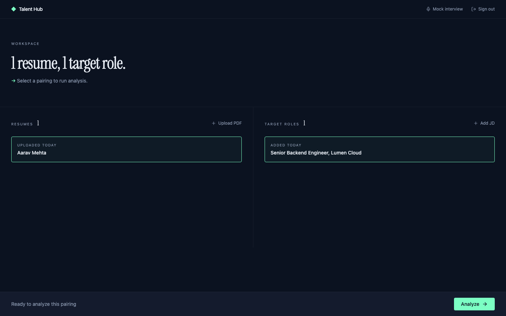
Project status
Where It Stands
The platform is built in 14 phases. The first six are complete and cover everything you see in the screenshots below. The remaining eight add fresh sourced knowledge, voice interviews, support for every role, quality checks, security, monitoring, a design refresh and going live. Last updated November 2026.
The problem
Why It Exists
Hiring is two lonely experiences. Candidates guess what a resume needs and walk into interviews unprepared, while recruiters sift through piles of applications by hand. This platform puts both sides in one place.
For candidates
Find out how your resume really fits a job, what to learn next, and practise interviews for the company and role you want.
For recruiters
See candidates ranked by fit, get interview questions tailored to each one, and a clear suggestion with reasons.
A person always decides
Scores and recommendations help a person decide. They never make the decision.
Free to run
Built to run on free-tier services, so anyone can try it without a cloud bill.
For candidates
The Candidate Journey
From a PDF resume to a ready-to-go plan. Everything below is shown with a sample candidate on the running platform.
Step 1
Your Workspace
Where do I begin?
Upload a resume as a PDF and it is read automatically. Add the job you are aiming for, pair the two and start the analysis.
- Name, skills, experience and education pulled from the resume
- Paste in any job description as a target role
- One tap to analyse the pairing
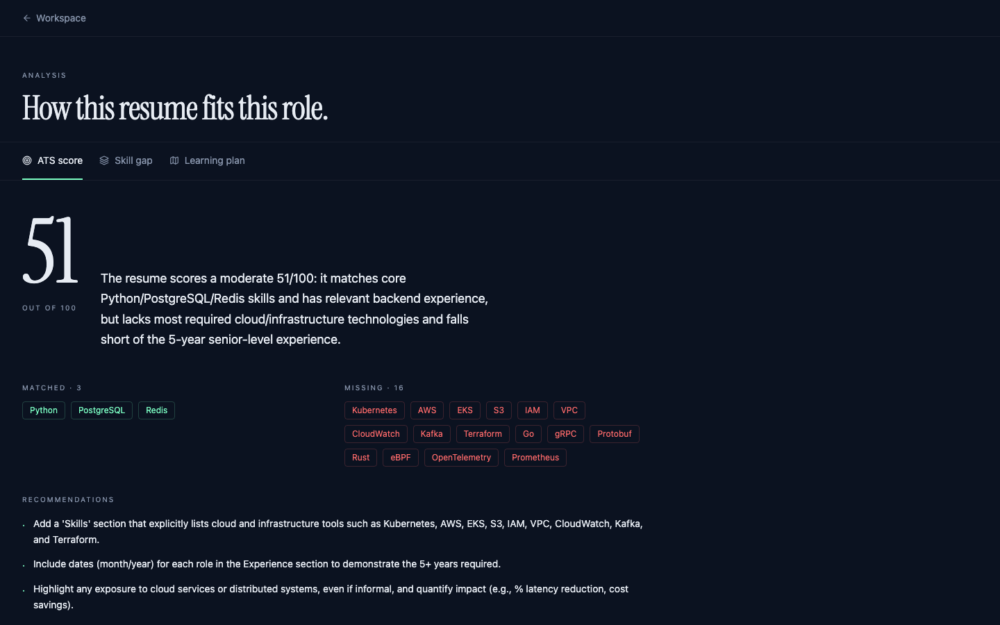
Step 2
Match Score
How well does this resume fit this job?
A score out of 100 for how closely the resume matches the job, with a short plain-language verdict.
- Skills that match and skills that are missing, as clear tags
- Practical suggestions for improving the resume
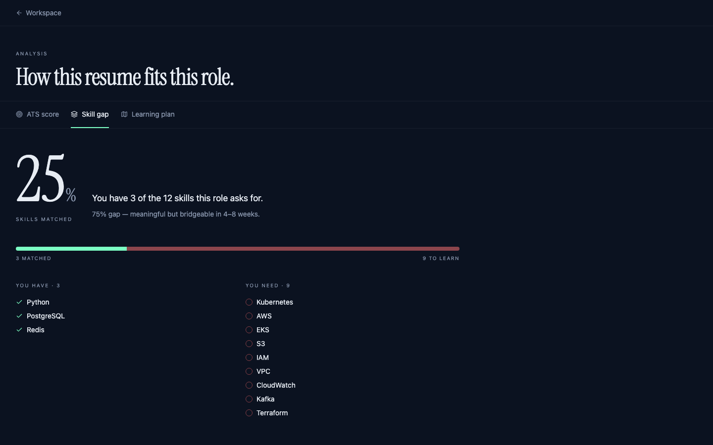
Step 3
Skill Gap
What do I have, and what do I still need?
A side-by-side view of the skills you already have and the ones the role asks for, with an honest read on how big the gap is.
- Matched skills and skills to learn, clearly separated
- An estimate of how long the gap could take to close
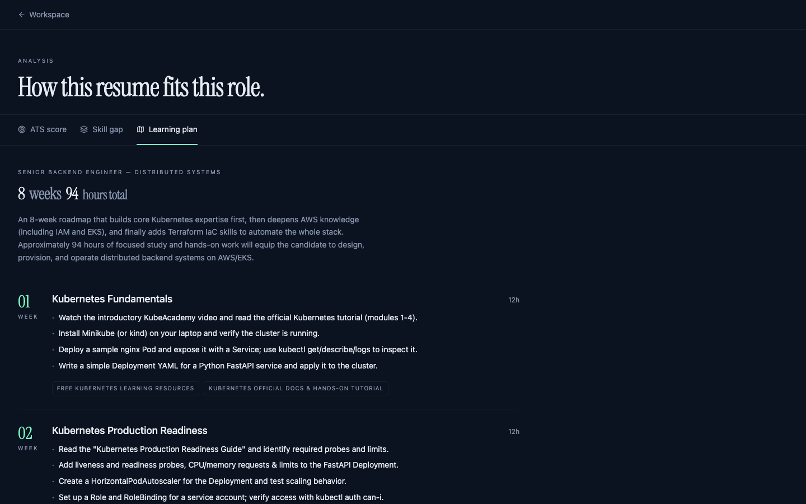
Step 4
Learning Plan
What should I do next, week by week?
A weekly plan built from the skill gap, with the hours each week needs and resources for every skill to learn.
- Week-by-week cards, each with a clear focus
- Hands-on tasks and resource links
- Total time at a glance
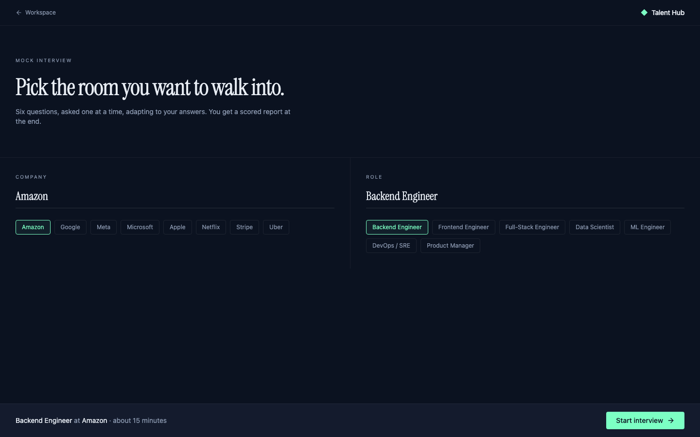
Step 5
Mock Interview Coach
Can I practise before the real thing?
Pick a company and a role and an AI interviewer asks six questions, one at a time, adapting to each answer.
- Choose a company and a role, or type your own
- Six questions, asked one at a time
- A scored report at the end
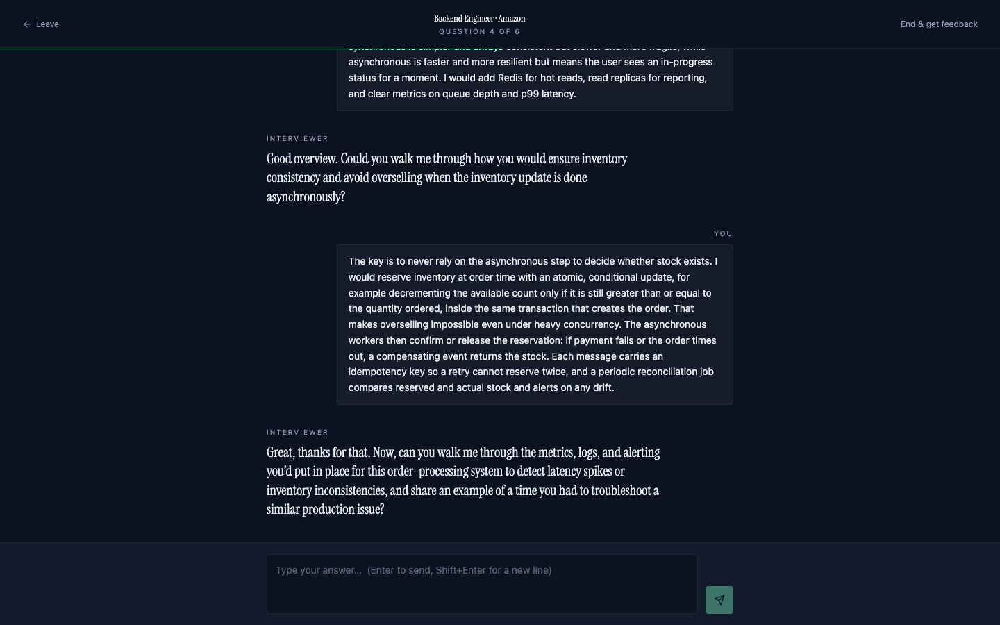
Step 6
The Interview
What is it like?
It feels like a real conversation. The interviewer reads each answer before choosing the next question.
- Questions chosen for the company and role you picked
- Each question follows from your last answer
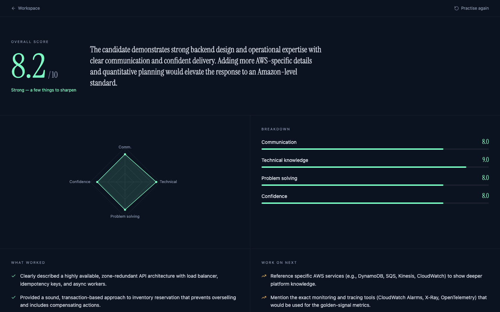
Step 7
Interview Feedback
How did I do?
At the end you get a scored report that shows where you were strong and what to work on next.
- An overall score out of 10, with a breakdown for communication, technical knowledge, problem solving and confidence
- What worked, and what to work on next
For recruiters
The Recruiter Journey
From a job description to a shortlist with reasons. The sample candidates below are fictional.
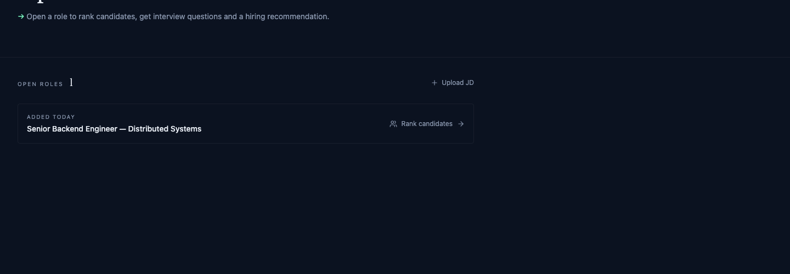
Step 1
Open Roles
Where do I start?
Upload a job description as a PDF or text and it becomes an open role. The platform reads it and pulls out the skills and experience it asks for.
- PDF, text or markdown, up to 5 MB
- Open a role to rank candidates against it
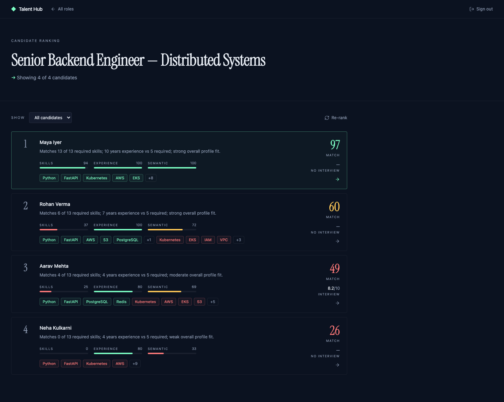
Step 2
Candidate Ranking
Who fits best?
Every candidate is scored against the role and sorted best first, with a short reason and a breakdown you can read at a glance.
- Skills, experience and overall meaning each scored
- Matched and missing skills shown as tags
- Mock interview scores appear next to the match score
- Filter to the top 5, 10 or more
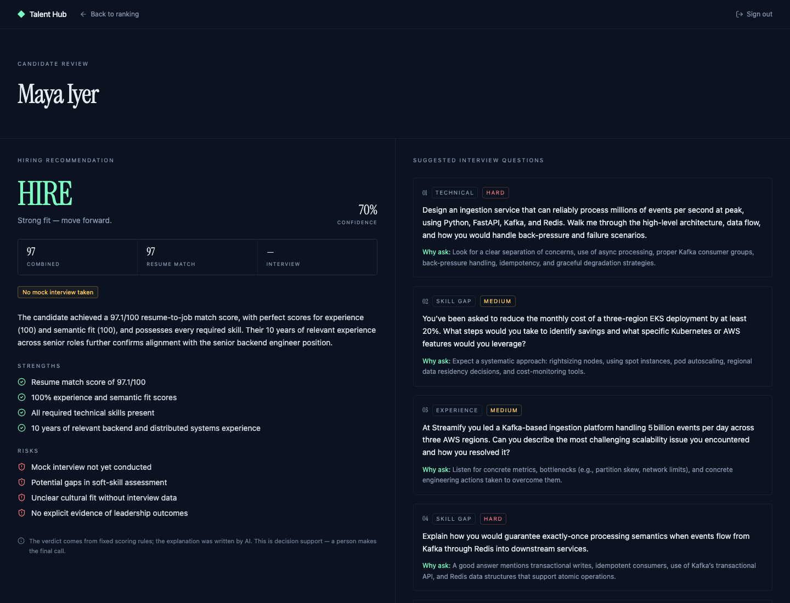
Step 3
Questions and Recommendation
What should I ask, and what should I decide?
Open a candidate to see interview questions built around their gaps and a clear suggestion of hire, consider or reject, with a confidence level, strengths, risks and the reasoning behind it.
- Suggested interview questions, each with why to ask it
- Hire, consider or reject, with strengths and risks
- The verdict comes from fixed scoring rules and the explanation is written by AI, so a person always makes the final call
System design
How It Fits Together
A candidate portal and a recruiter dashboard sit on top of one backend. Two guided flows, one for candidates and one for recruiters, hand work to a team of specialised AI agents, which use a knowledge library and a database for everything they need.
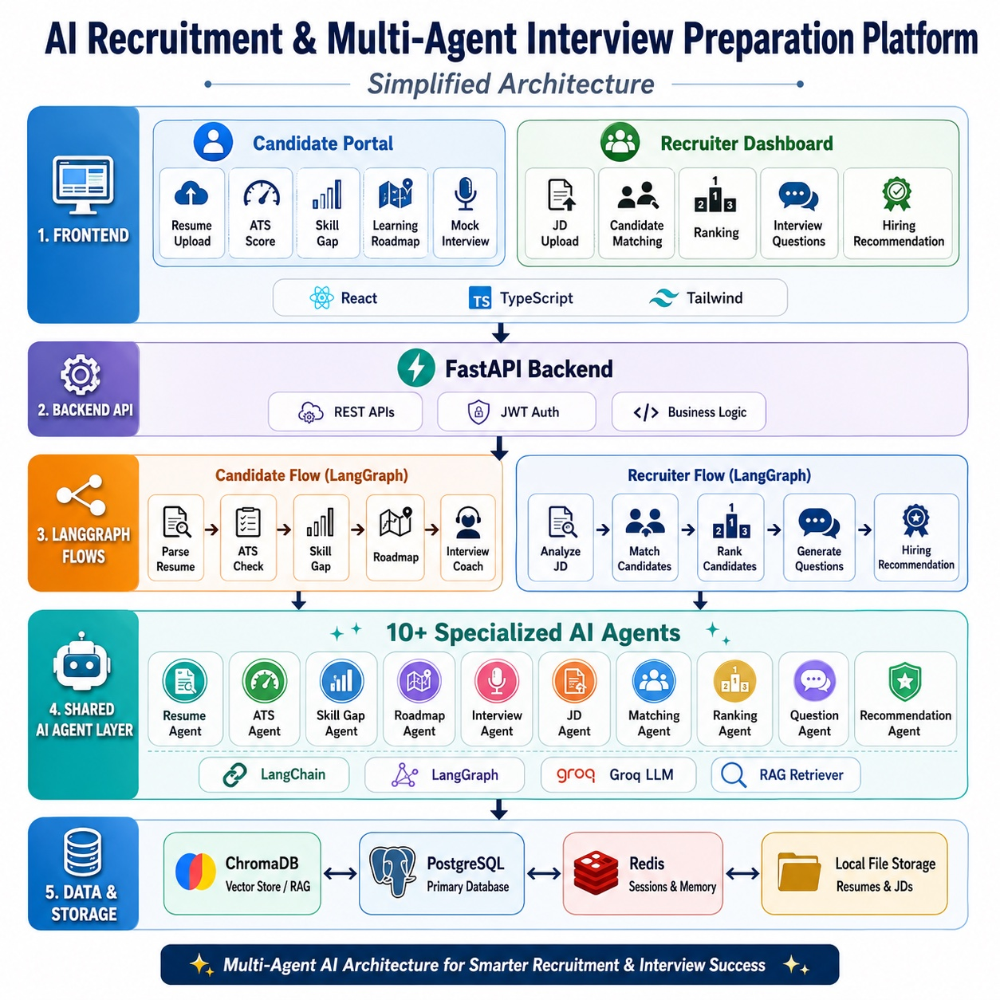
The build journey
Phase by Phase
The platform is being built in 14 phases over about 37 weeks. Completed phases are done and working; planned phases show what comes next. This list is updated as each phase moves forward.
Completed
Foundation & Infrastructure
Weeks 1–3 · 15 of 15 tasks done
Laid the groundwork: a safe home for the code with automatic checks on every change, the databases and file storage, secure sign-up and login, and the first screens.
Knowledge Library
Weeks 4–5 · 10 of 10 tasks done
Gave the AI a reference library to look things up in, covering interview experiences, learning resources, company interview patterns, data-structure notes and behavioural questions, so answers rest on real material.
Candidate Journey
Weeks 6–8 · 14 of 14 tasks done
Candidates can upload a resume and have it read automatically, get a match score against a job, see their skill gaps and receive a weekly learning plan.
Interview Coach
Weeks 9–10 · 10 of 10 tasks done
A practice interviewer for companies like Amazon, Google and Meta that asks questions, follows up on answers and scores communication and technical depth.
Recruiter Journey
Weeks 11–12 · 14 of 14 tasks done
Recruiters upload a job description, see candidates ranked by fit, get tailored interview questions for each and a hire, consider or reject suggestion with reasons.
Skills & Trusted Sources Foundation
Weeks 13–14 · 15 of 15 tasks done
Behind-the-scenes groundwork for the next stage: a controlled, safe way for the AI to fetch fresh reference material from vetted outside sources, with security checks and a fallback so the app keeps working if a source is down.
Coming next
Fresh, Sourced Knowledge
Weeks 15–17 · 16 tasks planned
Replace the fixed library with content collected from vetted sources, with licences recorded, regular refreshes and visible sources on roadmaps and interview references.
Voice Interview
Weeks 18–19 · 17 tasks planned
The AI speaks its questions and candidates can answer out loud, with feedback on pace, filler words and pauses. Typing always stays available, and audio comes with privacy and consent.
Every Role, Every User
Weeks 20–22 · 18 tasks planned
Interviews and learning plans for technical and non-technical roles at any level, a path for freshers and career changers, accessibility checks, fairness checks and a first extra language.
Quality Scorecard
Weeks 23–25 · 19 tasks planned
Test sets and pass marks for every AI feature, including fairness checks, so a change that makes answers worse is caught before it ships.
Security & AI Safety
Weeks 26–28 · 24 tasks planned
Check the platform against the industry list of top AI risks, add protective guardrails, harden resume and audio handling, and let candidates choose whether recruiters can see them.
Monitoring & Insights
Weeks 29–30 · 22 tasks planned
Track how the platform is used and how healthy it is, from active users and journeys to AI quality, speed and cost, with dashboards, alerts and clear steps for when something breaks.
Design Refresh
Weeks 31–34 · 21 tasks planned
Redesign every screen with one consistent look, make it work well on phones, tablets and desktops, and test it with real people.
Go Live
Weeks 35–37 · 20 tasks, 2 in progress
Put it online for real: production setup, secure web address, managed databases, load and security testing, an admin dashboard and a final sign-off. Usage limits and structured logging are already under way.
Trust & safety
Built to Be Trusted
Hiring decisions affect people, so the plan puts safety and fairness alongside features.
People stay in charge
Scores and recommendations are advice. A person makes every hiring decision.
Secure sign-in
Passwords are stored securely and sessions use short-lived login tokens, with separate candidate and recruiter roles.
Keeps working when a source is down
Outside reference sources only add extra detail. If one is unavailable, interviews and learning plans still work.
Fairness and privacy are planned work
Upcoming phases add fairness checks, an AI security review against the industry's top risks, and a candidate choice over whether recruiters can see them.
Under the hood
Tech Stack
React
TypeScript
Tailwind CSS
FastAPI
Python
LangChain
LangGraph
Groq
ChromaDB
PostgreSQL
Redis
Docker